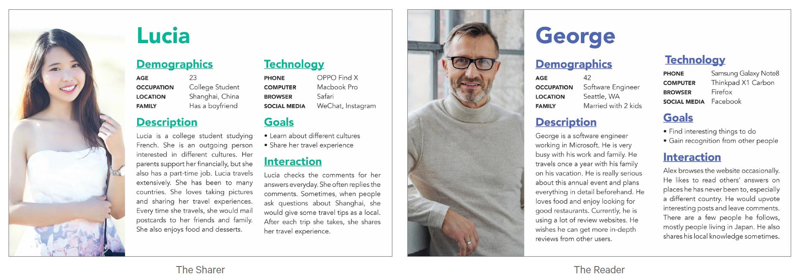
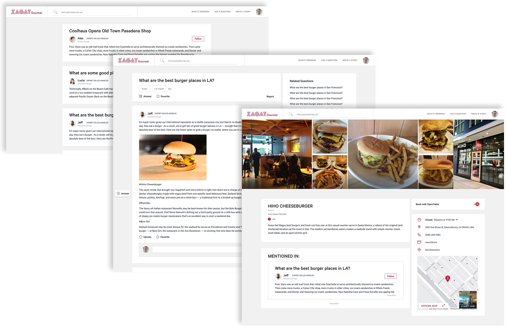

Interactive Design
Zagat Gourmet is an extension of the current Zagat website, which is a restaurant review website. The issue I’m trying to tackle is the distancing between the current review sites and the users. When people look for restaurants and travel sites, they prefer suggestions from their friends. However, the current products offer users a list generated by algorithms. Users hardly interact with other users. By providing mainly user-generated contents, Zagat Gourmet offer more insightful information users cannot get from other products.

Personas

User Flow

Low Fidelity Wireframes
